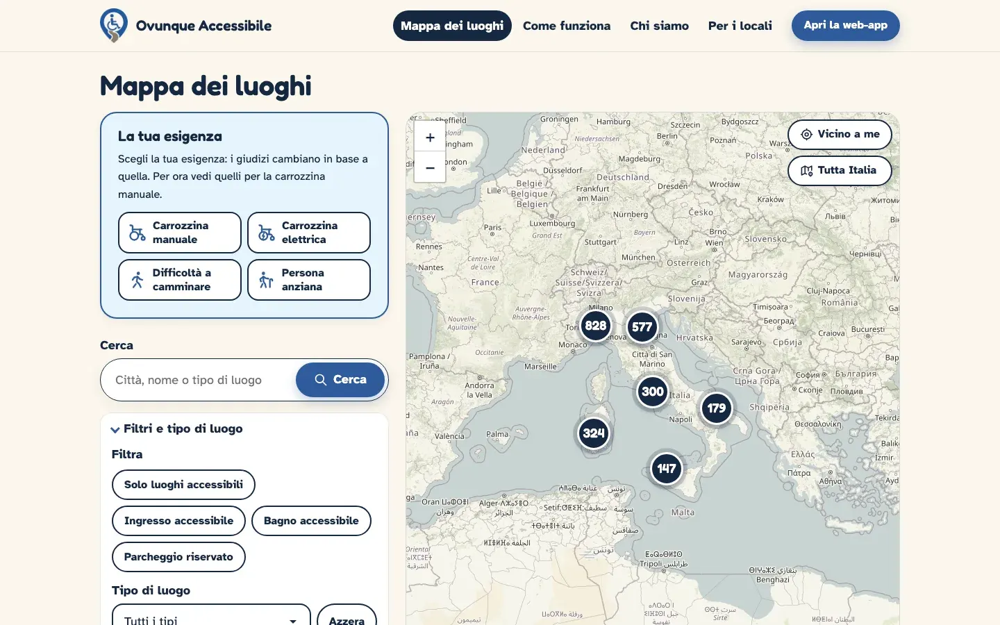
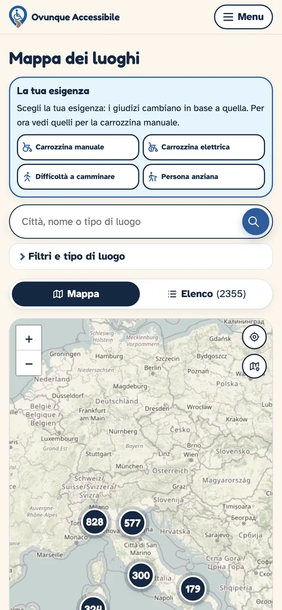
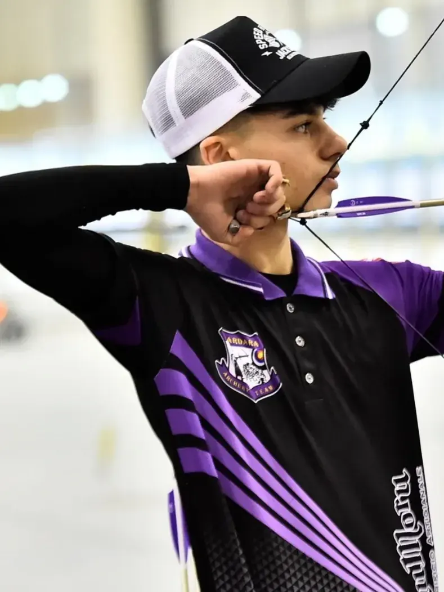
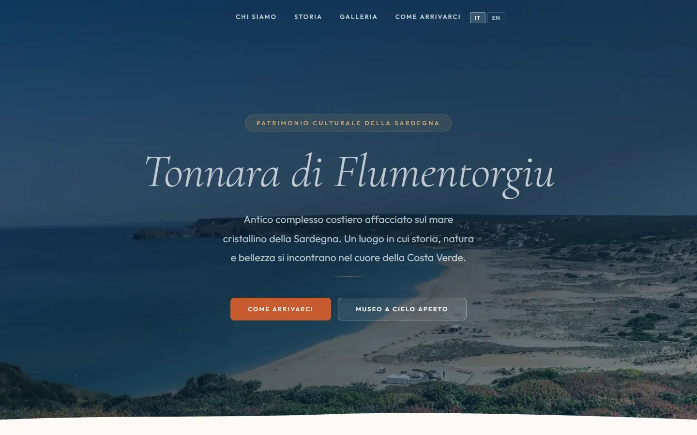
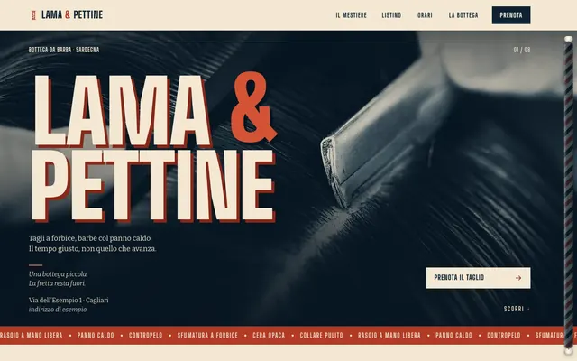
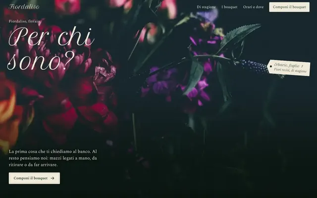
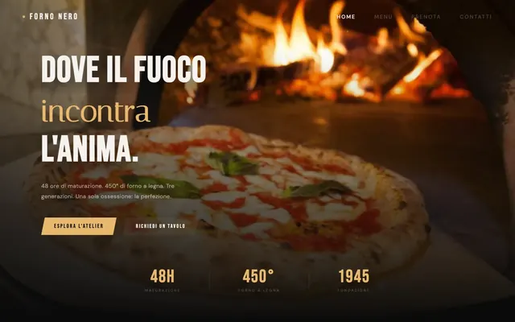
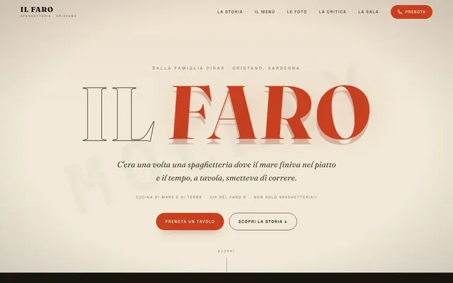
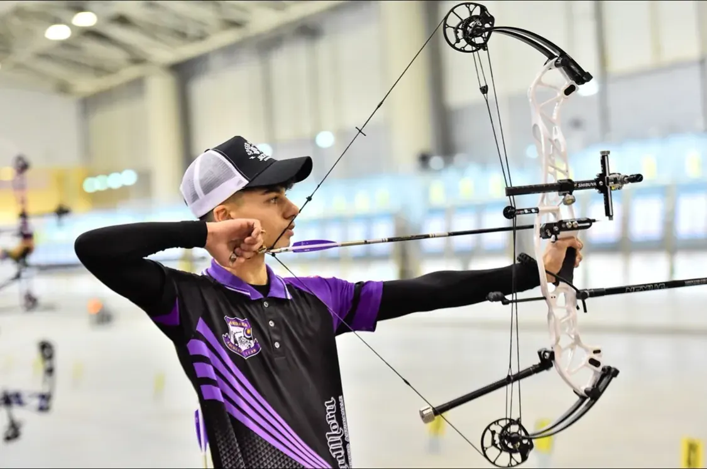
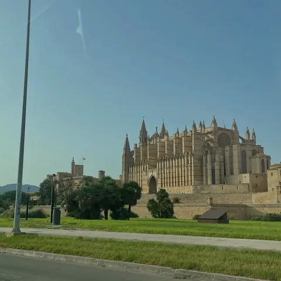

Ovunque Accessibile
- Cliente
- Ovunque Accessibile
- Cosa abbiamo fatto
- Sito e web-app: una mappa dei luoghi accessibili con schede, segnalazioni degli utenti, moderazione e accesso con Google.

Sviluppatore e co-founder di Mockly. Arciere compound.
Sono uno sviluppatore e un imprenditore di 18 anni. Costruisco siti con Mockly e tiro con l'arco compound da circa dieci anni: la stessa disciplina, la stessa precisione.
Mockly è la nostra agenzia di siti web: tre studenti dell'ITIS Othoca che costruiscono siti su misura per le attività della Sardegna.
Io mi occupo di sviluppo, interfaccia e visibilità su Google. Simone di backend e integrazioni, Adriano di sviluppo e fotografia.





Lama & PettineBarberia
FiordalisoFioraio
Forno NeroPizzeria
Il FaroSpaghetteriaSono demo costruite da Mockly per mostrare lo stile e la struttura di un sito: le attività sono di fantasia.
Raccontaci cosa fai: entro 48 ore hai un preventivo scritto, con prezzo e data.
Tiro con l'arco compound da circa dieci anni con l'ASD Sardara Archery Team, la società del mio paese.
Nel 2026 ho gareggiato ai Campionati Italiani Indoor, a Roma.

